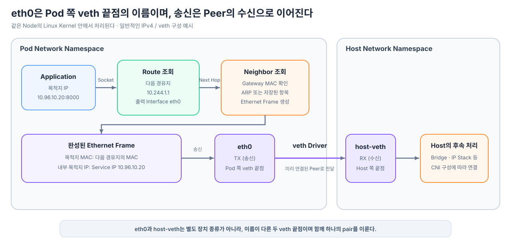
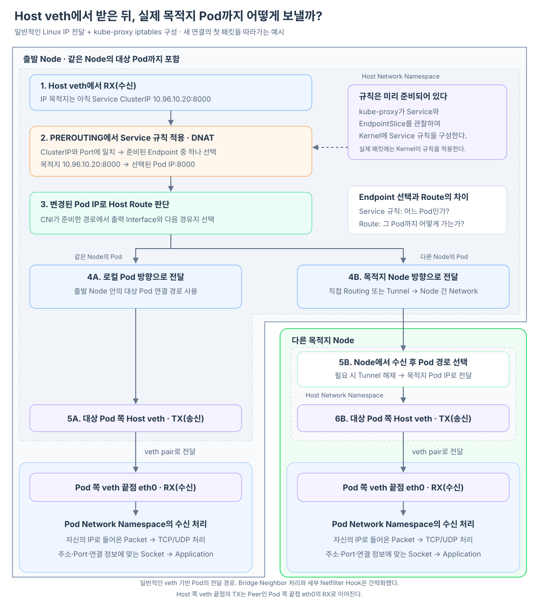

Pod의 Application이 Service ClusterIP로 연결을 시작하면 Linux Kernel은 Routing 정보를 조회해 출력 Interface로 eth0을 선택할 수 있다. 하지만 “eth0으로 내보낸다”는 표현만으로는 그 데이터가 실제로 어디에 꽂히는지 보이지 않는다.
Pod의 eth0은 보통 veth pair의 한쪽 Interface에 붙은 이름이다. 따라서 eth0에서 송신된 Packet은 Linux Kernel의 veth Driver에 의해 Peer인 Host 쪽 veth 끝점의 수신 경로로 전달된다.
Pod 쪽 veth 끝점(이름: eth0)에서 TX
→ Linux Kernel의 veth 전달
→ Peer인 Host 쪽 veth 끝점에서 RX

Route는 Interface뿐 아니라 다음 경유지도 결정한다
Application은 Socket에 최종 목적지 IP와 Port를 지정한다. Service ClusterIP가 10.96.10.20, Port가 8000이라고 해보자.
최종 목적지 10.96.10.20:8000
Linux Kernel은 Pod Network Namespace의 Routing 정보를 조회한다. 설명을 위한 Default Route가 다음과 같다면 출력 Interface와 다음 경유지가 함께 정해진다.
default via 10.244.1.1 dev eth0
최종 목적지 IP 10.96.10.20
다음 경유지 IP 10.244.1.1
출력 Interface eth0
여기서 eth0은 Packet을 내보낼 출구이고, 10.244.1.1은 그 출구 ��머에서 Packet을 먼저 넘겨받을 이웃이다. 실제 CNI 구현에 따라 Gateway 주소와 Route 형태는 달라질 수 있으며, Point-to-Point Route나 가상 Gateway를 사용하는 구성도 있다.
Ethernet 송신에는 다음 경유지의 MAC 주소가 필요하다
IP Route가 다음 경유지 IP를 정했더라도 Ethernet Frame을 만들려면 그 이웃의 MAC 주소가 필요하다. Linux Kernel은 현재 Network Namespace의 Neighbor Table에서 다음 경유지 IP에 대응하는 Link 계층 주소를 확인한다.
IPv4에서는 일반적으로 ARP를 사용하고, IPv6에서는 Neighbor Discovery를 사용한다. 이미 Neighbor Table에 유효한 항목이 있다면 매 Packet마다 다시 묻지 않고 저장된 값을 사용한다.
Route 조회
→ 다음 경유지 10.244.1.1 결정
→ Neighbor Table 조회
→ 다음 경유지의 MAC 주소 확인
→ Ethernet Frame 생성
이때 최종 목적지와 다음 경유지를 구분해야 한다.
Ethernet Frame
목적지 MAC 다음 경유지의 MAC
Frame 안의 IP Packet
목적지 IP Service ClusterIP 10.96.10.20
Gateway의 MAC 주소를 Frame에 넣었다고 해서 IP Packet의 목적지가 Gateway IP로 바뀐 것은 아니다. Link 계층에서는 “우선 이 이웃에게 넘긴다”고 표현하면서도, IP 계층의 최종 목적지는 Service ClusterIP로 유지한다.
Pod의 eth0은 veth pair를 이루는 한쪽 끝점이다
물리 Machine의 eth0이라면 Network Driver와 Network Card를 거쳐 Cable이나 Switch로 Frame을 내보낼 수 있다.
물리 Interface
eth0
→ Network Driver
→ Network Card
→ Cable
→ Switch
Pod의 eth0은 일반적으로 물리 Network Card가 아니라 veth pair의 한쪽이다.
Pod Network Namespace Host Network Namespace
Pod 쪽 veth 끝점 Host 쪽 veth 끝점
이름: eth0 ══ veth pair ══ 이름: vethXXXX
두 Interface를 만들 때 Linux Kernel 안에는 서로가 Peer라는 관계가 설정된다.
Pod 쪽 veth 끝점(eth0)의 Peer Host 쪽 veth 끝점
Host 쪽 veth 끝점의 Peer Pod 쪽 veth 끝점(eth0)
Kubernetes 환경에서는 CNI Plugin이 Pod Network를 준비하면서 veth pair를 만들고, 한쪽을 Pod Network Namespace로 옮겨 eth0으로 구성하며, 반대쪽은 Host Network Namespace에 남긴다. 즉 Application이 Packet을 보낼 때마다 연결 상대를 새로 찾는 것이 아니라, Pod를 준비할 때 이미 Interface의 연결 관계가 만들어져 있다.
veth Driver가 송신을 Peer의 수신으로 바꾼다
Kernel이 만든 Packet 데이터는 Linux Network Stack 안에서 관리된다. Route와 Neighbor 조회를 마친 Frame이 eth0의 송신 경로에 들어오면 이 Interface의 장치 종류를 구현하는 veth Driver가 동작한다.
veth Driver는 Packet을 Network Card로 보내는 대신 연결된 Peer Interface의 수신 경로에 전달한다.
Pod Network Namespace
eth0에서 TX
↓
Linux Kernel의 veth Driver
Peer Interface 확인
↓
Host Network Namespace
vethXXXX에서 RX
따라서 이 사이에 Packet을 받아 다시 전송하는 별도의 Proxy Process가 있는 것이 아니다. 같은 Linux Kernel 안의 가상 Network Device 구현이 한 Interface의 송신을 반대편 Interface의 수신으로 연결한다.
이것이 “내보낸 데이터를 어디에 꽂아 주는가?”에 대한 직접적인 답이다.
Pod의
eth0과 Host 쪽 Peer는 함께 하나의 veth pair를 이룬다. Linux Kernel의 veth Driver가 Pod 쪽 끝점eth0의 송신 Packet을 Host 쪽 끝점의 수신 경로에 넣는다.
Host veth에서 받은 Packet은 Node의 입력 Packet이 된다
같은 Packet도 Interface 관점에 따라 방향이 달라진다.
Pod 쪽 veth 끝점(eth0) 관점 TX: 내보낸 Packet
Host 쪽 veth 끝점 관점 RX: 받은 Packet
Host veth에서 RX로 나타난 순간부터 Packet은 Host Network Namespace로 들어온 입력 Packet이다. 이후 Node의 Network Stack이 적용된다.
여기서 등장하는 PREROUTING은 Linux Netfilter가 제공하는 처리 지점이다. Netfilter가 무엇이며 INPUT·FORWARD·OUTPUT 등과 어떻게 구분되는지, iptables·nftables가 어떤 규칙을 설정하는지는 Netfilter는 무엇이고 패킷의 어느 지점에서 동작할까?에서 살펴본다.
아래 그림은 일반적인 Linux IP 전달과 kube-proxy의 iptables 구성을 기준으로 새 연결의 첫 Packet을 따라간다. 먼저 Service 규칙이 실제 Endpoint를 선택하고 목적지 주소를 바꾼다. 그다음 Host의 Route 판단이 바뀐 Pod IP까지 가는 경로를 선택한다.

두 경로 모두 마지막에는 대상 Pod와 연결된 Host 쪽 veth 끝점에서 송신(TX)하고, 같은 veth pair의 Pod 쪽 끝점인 eth0에서 수신(RX)한다. Pod Network Namespace의 Network Stack은 목적지 IP가 자신의 주소임을 확인하고 TCP·UDP 처리를 거쳐 주소·Port·연결 정보에 맞는 Socket으로 데이터를 전달한다. Application은 그 Socket을 통해 데이터를 읽는다. DNAT가 변경하는 것은 목적지 주소이며, 실제 eth0까지의 전달은 준비된 Network 경로와 두 veth 끝점의 Peer 관계가 담당한다.
그림에서는 Bridge의 세부 동작과 FORWARD·POSTROUTING Hook을 생략했다. 실제 경로는 CNI 구성에 따라 달라지며, eBPF로 Service 처리를 구현한 환경은 DNAT와 전달을 수행하는 위치도 다를 수 있다. 이후 같은 연결의 Packet에는 연결 추적 상태에 저장된 NAT 변환이 적용된다.
Host veth에서 RX
→ Netfilter의 PREROUTING 같은 입력 처리 지점
→ Service 규칙과 일치하면 DNAT
→ 목적지가 실제 Endpoint Pod IP로 변경
→ 변경된 목적지를 기준으로 Host Route 판단
따라서 Pod의 Route가 eth0을 선택한 것만으로 목적지 Node까지 모두 결정된 것은 아니다. Pod 쪽 veth 끝점인 eth0에서 송신하면 Peer인 Host 쪽 veth 끝점에서 수신되고, 실제 Endpoint 선택과 Node 간 전달은 그 뒤의 Service 규칙과 CNI Network가 이어서 처리한다.
연결 관계는 Interface 정보에서 단서를 볼 수 있다
Pod 안에서 다음 명령을 실행하면 eth0의 Interface 정보와 Link 상태를 볼 수 있다.
ip link show eth0
환경에 따라 다음처럼 eth0@if12 형태가 보일 수 있다.
eth0@if12: <BROADCAST,MULTICAST,UP,LOWER_UP> ...
여기서 if12는 Peer 쪽 Interface Index를 찾는 단서가 될 수 있다. 다만 Peer가 다른 Network Namespace에 있고 CNI마다 Interface 이름과 구성 방식이 다르므로, Pod 안의 출력만으로 Host Interface 이름이 항상 직접 보이는 것은 아니다.
ip link 출력에서 Interface의 이름·상태·연결 단서를 읽는 법, 물리 NIC와 가상 Interface를 어떻게 구분해서 확인하는지는 ip link로 Network Interface의 상태와 연결 구조를 어떻게 읽을까?에서 자세히 살펴본다.
핵심은 이름이 아니라 연결 구조다.
Route가 eth0 선택
→ Neighbor 정보로 Ethernet Frame 준비
→ eth0에서 TX
→ 미리 연결된 veth Peer로 전달
→ Host veth에서 RX
→ Node의 Network 처리 시작